[ET] 环境科技 Environmental
共 294 个条目 · environmental
版本: 5.0.1 · 来源: environmental-1.21.1-5.0.1.jar
Expanding the environment. New wood, new blocks, new friends.
MC百科中文名: [ET] 环境科技
MC百科页面: https://www.mcmod.cn/class/583.html（[ET] 环境科技 (Environmental Tech)）
官方介绍 （Modrinth · 中文版由 GLM AI 翻译，仅供参考）
📖 关于：
Environmental 是一个主世界地表扩展模组，进一步鼓励玩家探索现有生物群系，并在视觉上补全和完善它们。模组引入了全新的生物群系，例如 Blossom Woods（繁花树林）、Pine Barrens（松树荒地）和 Marshes（沼泽）！除此之外还有若干新生物，包括 Slabfish（板鱼）、鹿（Deer）、斑马（Zebra）、貘（Tapir）等等！
由 GLM AI 翻译，仅供参考
查看英文原文（Modrinth）
📖 About:
Environmental is a general overworld surface expansion mod that further incentivizes exploring existing biomes, and completes and improves them visually. Introduces new biomes such as Blossom Woods, Pine Barrens, and Marshes! Alongside these are several new mobs, including Slabfish, Deer, Zebras, Tapirs, and more!
资料来源：Environmental
物品与方块
environmental:architect_belt · 物品
 鹤望兰
鹤望兰environmental:bird_of_paradise · 方块
 蓝色翠雀花
蓝色翠雀花environmental:blue_delphinium · 方块
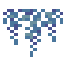
悬挂的蓝色紫藤树叶environmental:blue_hanging_wisteria_leaves · 方块蓝色紫藤树叶堆
environmental:blue_wisteria_leaf_pile · 方块
 蓝色紫藤树叶
蓝色紫藤树叶environmental:blue_wisteria_leaves · 方块
 蓝色紫藤树苗
蓝色紫藤树苗environmental:blue_wisteria_sapling · 方块
 蓝铃花
蓝铃花environmental:bluebell · 方块
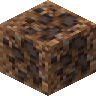
埋藏的松露environmental:buried_truffle · 方块
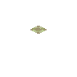
仙人掌顶environmental:cactus_bobble · 方块
 车轮花
车轮花environmental:cartwheel · 方块
 香蒲
香蒲environmental:cattail · 方块
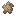
香蒲绒environmental:cattail_fluff · 物品
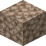
香蒲绒块environmental:cattail_fluff_block · 方块?香蒲幼苗
environmental:cattail_sprout · 方块?香蒲茎
environmental:cattail_stalk · 方块
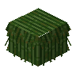
香蒲茅草environmental:cattail_thatch · 方块
 香蒲茅草台阶
香蒲茅草台阶environmental:cattail_thatch_slab · 方块
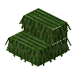
香蒲茅草楼梯environmental:cattail_thatch_stairs · 方块
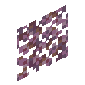
明朗李树树叶堆environmental:cheerful_plum_leaf_pile · 方块
 明朗李树树叶
明朗李树树叶environmental:cheerful_plum_leaves · 方块
 明朗李树树苗
明朗李树树苗environmental:cheerful_plum_sapling · 方块
 樱桃
樱桃environmental:cherries · 物品
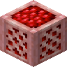
箱装樱桃environmental:cherry_crate · 方块?樱桃派
environmental:cherry_pie · 物品
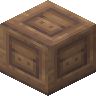
雕纹泥砖environmental:chiseled_mud_bricks · 方块
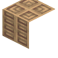
松木雕纹书架environmental:chiseled_pine_bookshelf · 方块
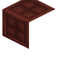
李木雕纹书架environmental:chiseled_plum_bookshelf · 方块
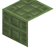
柳木雕纹书架environmental:chiseled_willow_bookshelf · 方块
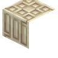
紫藤木雕纹书架environmental:chiseled_wisteria_bookshelf · 方块
 熟鸭肉
熟鸭肉environmental:cooked_duck · 物品
 熟鹿排
熟鹿排environmental:cooked_venison · 物品
 杯状地衣
杯状地衣environmental:cup_lichen · 方块
 鹿刷怪蛋
鹿刷怪蛋environmental:deer_spawn_egg · 物品
 石竹
石竹environmental:dianthus · 方块
 泥土砖台阶
泥土砖台阶environmental:dirt_brick_slab · 方块
 泥土砖楼梯
泥土砖楼梯environmental:dirt_brick_stairs · 方块
 泥土砖墙
泥土砖墙environmental:dirt_brick_wall · 方块
 泥土砖
泥土砖environmental:dirt_bricks · 方块
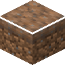
土径environmental:dirt_path · 方块
 泥土瓦台阶
泥土瓦台阶environmental:dirt_tile_slab · 方块
 泥土瓦楼梯
泥土瓦楼梯environmental:dirt_tile_stairs · 方块
 泥土瓦墙
泥土瓦墙environmental:dirt_tile_wall · 方块
 泥土瓦
泥土瓦environmental:dirt_tiles · 方块
 生鸭肉
生鸭肉environmental:duck · 物品
 鸭蛋
鸭蛋environmental:duck_egg · 物品
 箱装鸭蛋
箱装鸭蛋environmental:duck_egg_crate · 方块
鸭刷怪蛋environmental:duck_spawn_egg · 物品
 浮萍
浮萍environmental:duckweed · 方块
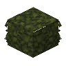
浮萍茅草environmental:duckweed_thatch · 方块
 浮萍茅草台阶
浮萍茅草台阶environmental:duckweed_thatch_slab · 方块
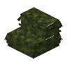
浮萍茅草楼梯environmental:duckweed_thatch_stairs · 方块
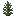
矮云杉environmental:dwarf_spruce · 方块
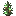
插有铜绿火把的矮云杉environmental:dwarf_spruce_cupric_torch · 方块
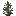
插有末影火把的矮云杉environmental:dwarf_spruce_ender_torch · 方块
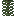
矮云杉植株environmental:dwarf_spruce_plant · 方块
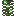
插有铜绿火把的矮云杉植株environmental:dwarf_spruce_plant_cupric_torch · 方块
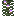
插有末影火把的矮云杉植株environmental:dwarf_spruce_plant_ender_torch · 方块
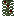
插有红石火把的矮云杉植株environmental:dwarf_spruce_plant_redstone_torch · 方块
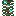
插有灵魂火把的矮云杉植株environmental:dwarf_spruce_plant_soul_torch · 方块
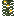
插有火把的矮云杉植株environmental:dwarf_spruce_plant_torch · 方块
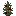
插有红石火把的矮云杉environmental:dwarf_spruce_redstone_torch · 方块
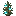
插有灵魂火把的矮云杉environmental:dwarf_spruce_soul_torch · 方块插有火把的矮云杉
environmental:dwarf_spruce_torch · 方块?耳廓狐刷怪蛋
environmental:fennec_fox_spawn_egg · 物品?巨型睡莲
environmental:giant_lily_pad · 方块巨型高草丛
environmental:giant_tall_grass · 方块?草径
environmental:grass_path · 方块
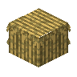
茅草environmental:grass_thatch · 方块
 茅草台阶
茅草台阶environmental:grass_thatch_slab · 方块
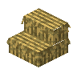
茅草楼梯environmental:grass_thatch_stairs · 方块
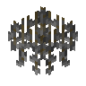
悬挂的柳树树叶environmental:hanging_willow_leaves · 方块?医治者的药草袋
environmental:healer_pouch · 物品
 Banner Pattern
Banner Patternenvironmental:helper_banner_pattern · 物品
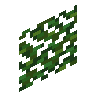
木槿树叶堆environmental:hibiscus_leaf_pile · 方块
 木槿树叶
木槿树叶environmental:hibiscus_leaves · 方块
 锦鲤
锦鲤environmental:koi · 物品?锦鲤桶
environmental:koi_bucket · 物品
锦鲤刷怪蛋environmental:koi_spawn_egg · 物品?大型睡莲
environmental:large_lily_pad · 方块
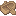
松木大型船environmental:large_pine_boat · 物品李木大型船
environmental:large_plum_boat · 物品
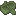
柳木大型船environmental:large_willow_boat · 物品紫藤木大型船
environmental:large_wisteria_boat · 物品
 旗帜图案
旗帜图案environmental:lumberer_banner_pattern · 物品
 品红色木槿花
品红色木槿花environmental:magenta_hibiscus · 方块
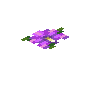
墙上的品红色木槿花environmental:magenta_wall_hibiscus · 方块
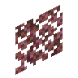
阴沉李树树叶堆environmental:moody_plum_leaf_pile · 方块
 阴沉李树树叶
阴沉李树树叶environmental:moody_plum_leaves · 方块
 阴沉李树树苗
阴沉李树树苗environmental:moody_plum_sapling · 方块
 泥巴球
泥巴球environmental:mud_ball · 物品
 音乐唱片
音乐唱片environmental:music_disc_leaving_home · 物品
 音乐唱片
音乐唱片environmental:music_disc_slabrave · 物品
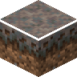
菌丝体径environmental:mycelium_path · 方块菌丝孢芽
environmental:mycelium_sprouts · 方块
 橙色木槿花
橙色木槿花environmental:orange_hibiscus · 方块
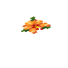
墙上的橙色木槿花environmental:orange_wall_hibiscus · 方块
 松木蜂箱
松木蜂箱environmental:pine_beehive · 方块
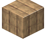
松木直纹板environmental:pine_boards · 方块
 松木船
松木船environmental:pine_boat · 物品
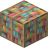
松木书架environmental:pine_bookshelf · 方块
 松木按钮
松木按钮environmental:pine_button · 方块
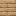
松木箱子environmental:pine_chest · 方块
 松木运输船
松木运输船environmental:pine_chest_boat · 物品
 松木门
松木门environmental:pine_door · 方块
 松木栅栏
松木栅栏environmental:pine_fence · 方块
 松木栅栏门
松木栅栏门environmental:pine_fence_gate · 方块
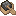
松木动力船environmental:pine_furnace_boat · 物品
 悬挂式松木告示牌
悬挂式松木告示牌environmental:pine_hanging_sign · 方块
 松木梯子
松木梯子environmental:pine_ladder · 方块
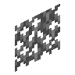
松树树叶堆environmental:pine_leaf_pile · 方块
 松树树叶
松树树叶environmental:pine_leaves · 方块
 松木原木
松木原木environmental:pine_log · 方块
 松木木板
松木木板environmental:pine_planks · 方块
 松木压力板
松木压力板environmental:pine_pressure_plate · 方块
 松树树苗
松树树苗environmental:pine_sapling · 方块
 松木告示牌
松木告示牌environmental:pine_sign · 方块
 松木台阶
松木台阶environmental:pine_slab · 方块
 松木楼梯
松木楼梯environmental:pine_stairs · 方块
 松木活板门
松木活板门environmental:pine_trapdoor · 方块
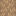
墙上的悬挂式松木告示牌environmental:pine_wall_hanging_sign · 方块墙上的松木告示牌
environmental:pine_wall_sign · 方块
松木environmental:pine_wood · 方块
 松果
松果environmental:pinecone · 方块
松果傀儡刷怪蛋environmental:pinecone_golem_spawn_egg · 物品
 粉红色翠雀花
粉红色翠雀花environmental:pink_delphinium · 方块
 悬挂的粉红色紫藤树叶
悬挂的粉红色紫藤树叶environmental:pink_hanging_wisteria_leaves · 方块
 粉红色木槿花
粉红色木槿花environmental:pink_hibiscus · 方块
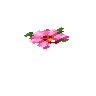
墙上的粉红色木槿花environmental:pink_wall_hibiscus · 方块
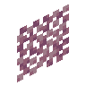
粉红色紫藤树叶堆environmental:pink_wisteria_leaf_pile · 方块
 粉红色紫藤树叶
粉红色紫藤树叶environmental:pink_wisteria_leaves · 方块
 粉红色紫藤树苗
粉红色紫藤树苗environmental:pink_wisteria_sapling · 方块李子
environmental:plum · 物品
 李木蜂箱
李木蜂箱environmental:plum_beehive · 方块
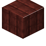
李木直纹板environmental:plum_boards · 方块
 李木船
李木船environmental:plum_boat · 物品
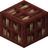
李木书架environmental:plum_bookshelf · 方块
 李木按钮
李木按钮environmental:plum_button · 方块李木箱子
environmental:plum_chest · 方块
 李木运输船
李木运输船environmental:plum_chest_boat · 物品
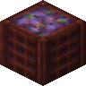
箱装李子environmental:plum_crate · 方块
 李木门
李木门environmental:plum_door · 方块
 李木栅栏
李木栅栏environmental:plum_fence · 方块
 李木栅栏门
李木栅栏门environmental:plum_fence_gate · 方块
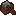
李木动力船environmental:plum_furnace_boat · 物品
 悬挂式李木告示牌
悬挂式李木告示牌environmental:plum_hanging_sign · 方块
 李木梯子
李木梯子environmental:plum_ladder · 方块李树树叶堆
environmental:plum_leaf_pile · 方块
 李树树叶
李树树叶environmental:plum_leaves · 方块
 李木原木
李木原木environmental:plum_log · 方块
 李木木板
李木木板environmental:plum_planks · 方块
 李木压力板
李木压力板environmental:plum_pressure_plate · 方块
 李树树苗
李树树苗environmental:plum_sapling · 方块
 李木告示牌
李木告示牌environmental:plum_sign · 方块
 李木台阶
李木台阶environmental:plum_slab · 方块
 李木楼梯
李木楼梯environmental:plum_stairs · 方块
 李木活板门
李木活板门environmental:plum_trapdoor · 方块墙上的悬挂式李木告示牌
environmental:plum_wall_hanging_sign · 方块墙上的李木告示牌
environmental:plum_wall_sign · 方块
李木environmental:plum_wood · 方块灰化土径
environmental:podzol_path · 方块
 鹤望兰盆栽
鹤望兰盆栽environmental:potted_bird_of_paradise · 方块
蓝色翠雀花盆栽environmental:potted_blue_delphinium · 方块
蓝色紫藤树苗盆栽environmental:potted_blue_wisteria_sapling · 方块
蓝铃花盆栽environmental:potted_bluebell · 方块
车轮花盆栽environmental:potted_cartwheel · 方块香蒲盆栽
environmental:potted_cattail · 方块
明朗李树树苗盆栽environmental:potted_cheerful_plum_sapling · 方块
杯状地衣盆栽environmental:potted_cup_lichen · 方块
石竹盆栽environmental:potted_dianthus · 方块
品红色木槿花盆栽environmental:potted_magenta_hibiscus · 方块
阴沉李树树苗盆栽environmental:potted_moody_plum_sapling · 方块
橙色木槿花盆栽environmental:potted_orange_hibiscus · 方块
松树树苗盆栽environmental:potted_pine_sapling · 方块
粉红色翠雀花盆栽environmental:potted_pink_delphinium · 方块
粉红色木槿花盆栽environmental:potted_pink_hibiscus · 方块
粉红色紫藤树苗盆栽environmental:potted_pink_wisteria_sapling · 方块
李树树苗盆栽environmental:potted_plum_sapling · 方块
紫色翠雀花盆栽environmental:potted_purple_delphinium · 方块
紫色木槿花盆栽environmental:potted_purple_hibiscus · 方块
紫色紫藤树苗盆栽environmental:potted_purple_wisteria_sapling · 方块
红色木槿花盆栽environmental:potted_red_hibiscus · 方块
红色莲花盆栽environmental:potted_red_lotus_flower · 方块
一点红盆栽environmental:potted_tasselflower · 方块
紫罗兰盆栽environmental:potted_violet · 方块
白色翠雀花盆栽environmental:potted_white_delphinium · 方块
白色莲花盆栽environmental:potted_white_lotus_flower · 方块
白色紫藤树苗盆栽environmental:potted_white_wisteria_sapling · 方块
柳树树苗盆栽environmental:potted_willow_sapling · 方块
黄色木槿花盆栽environmental:potted_yellow_hibiscus · 方块
 紫色翠雀花
紫色翠雀花environmental:purple_delphinium · 方块悬挂的紫色紫藤树叶
environmental:purple_hanging_wisteria_leaves · 方块
 紫色木槿花
紫色木槿花environmental:purple_hibiscus · 方块墙上的紫色木槿花
environmental:purple_wall_hibiscus · 方块紫色紫藤树叶堆
environmental:purple_wisteria_leaf_pile · 方块
 紫色紫藤树叶
紫色紫藤树叶environmental:purple_wisteria_leaves · 方块
 紫色紫藤树苗
紫色紫藤树苗environmental:purple_wisteria_sapling · 方块
 红色木槿花
红色木槿花environmental:red_hibiscus · 方块
 红色莲花
红色莲花environmental:red_lotus_flower · 方块墙上的红色木槿花
environmental:red_wall_hibiscus · 方块
驯鹿刷怪蛋environmental:reindeer_spawn_egg · 物品?板鱼桶
environmental:slabfish_bucket · 物品
 板鱼雕像
板鱼雕像environmental:slabfish_effigy · 方块
板鱼刷怪蛋environmental:slabfish_spawn_egg · 物品平滑泥坯
environmental:smooth_mud · 方块
 平滑泥坯台阶
平滑泥坯台阶environmental:smooth_mud_slab · 方块
 去皮松木原木
去皮松木原木environmental:stripped_pine_log · 方块
去皮松木environmental:stripped_pine_wood · 方块
 去皮李木原木
去皮李木原木environmental:stripped_plum_log · 方块
去皮李木environmental:stripped_plum_wood · 方块
 去皮柳木原木
去皮柳木原木environmental:stripped_willow_log · 方块
去皮柳木environmental:stripped_willow_wood · 方块
 去皮紫藤原木
去皮紫藤原木environmental:stripped_wisteria_log · 方块
去皮紫藤木environmental:stripped_wisteria_wood · 方块
貘刷怪蛋environmental:tapir_spawn_egg · 物品
 一点红
一点红environmental:tasselflower · 方块?盗贼的兜帽
environmental:thief_hood · 物品松木陷阱箱
environmental:trapped_pine_chest · 方块李木陷阱箱
environmental:trapped_plum_chest · 方块柳木陷阱箱
environmental:trapped_willow_chest · 方块紫藤木陷阱箱
environmental:trapped_wisteria_chest · 方块
 松露
松露environmental:truffle · 物品
 生鹿排
生鹿排environmental:venison · 物品
 紫罗兰
紫罗兰environmental:violet · 方块?漂泊者的靴子
environmental:wanderer_boots · 物品
涂蜡松果environmental:waxed_pinecone · 方块
 白色翠雀花
白色翠雀花environmental:white_delphinium · 方块悬挂的白色紫藤树叶
environmental:white_hanging_wisteria_leaves · 方块
 白色莲花
白色莲花environmental:white_lotus_flower · 方块白色紫藤树叶堆
environmental:white_wisteria_leaf_pile · 方块
 白色紫藤树叶
白色紫藤树叶environmental:white_wisteria_leaves · 方块
 白色紫藤树苗
白色紫藤树苗environmental:white_wisteria_sapling · 方块
 柳木蜂箱
柳木蜂箱environmental:willow_beehive · 方块
 柳木直纹板
柳木直纹板environmental:willow_boards · 方块
 柳木船
柳木船environmental:willow_boat · 物品柳木书架
environmental:willow_bookshelf · 方块
 柳木按钮
柳木按钮environmental:willow_button · 方块柳木箱子
environmental:willow_chest · 方块
 柳木运输船
柳木运输船environmental:willow_chest_boat · 物品
 柳木门
柳木门environmental:willow_door · 方块
 柳木栅栏
柳木栅栏environmental:willow_fence · 方块
 柳木栅栏门
柳木栅栏门environmental:willow_fence_gate · 方块柳木动力船
environmental:willow_furnace_boat · 物品
 悬挂式柳木告示牌
悬挂式柳木告示牌environmental:willow_hanging_sign · 方块
 柳木梯子
柳木梯子environmental:willow_ladder · 方块柳树树叶堆
environmental:willow_leaf_pile · 方块
 柳树树叶
柳树树叶environmental:willow_leaves · 方块
 柳木原木
柳木原木environmental:willow_log · 方块
 柳木木板
柳木木板environmental:willow_planks · 方块
 柳木压力板
柳木压力板environmental:willow_pressure_plate · 方块
 柳树树苗
柳树树苗environmental:willow_sapling · 方块
 柳木告示牌
柳木告示牌environmental:willow_sign · 方块
 柳木台阶
柳木台阶environmental:willow_slab · 方块
 柳木楼梯
柳木楼梯environmental:willow_stairs · 方块
 柳木活板门
柳木活板门environmental:willow_trapdoor · 方块墙上的悬挂式柳木告示牌
environmental:willow_wall_hanging_sign · 方块墙上的柳木告示牌
environmental:willow_wall_sign · 方块
柳木environmental:willow_wood · 方块
 紫藤木蜂箱
紫藤木蜂箱environmental:wisteria_beehive · 方块紫藤木直纹板
environmental:wisteria_boards · 方块
 紫藤木船
紫藤木船environmental:wisteria_boat · 物品紫藤木书架
environmental:wisteria_bookshelf · 方块
 紫藤木按钮
紫藤木按钮environmental:wisteria_button · 方块紫藤木箱子
environmental:wisteria_chest · 方块
 紫藤木运输船
紫藤木运输船environmental:wisteria_chest_boat · 物品
 紫藤木门
紫藤木门environmental:wisteria_door · 方块
 紫藤木栅栏
紫藤木栅栏environmental:wisteria_fence · 方块
 紫藤木栅栏门
紫藤木栅栏门environmental:wisteria_fence_gate · 方块紫藤木动力船
environmental:wisteria_furnace_boat · 物品
 悬挂式紫藤木告示牌
悬挂式紫藤木告示牌environmental:wisteria_hanging_sign · 方块
 紫藤木梯子
紫藤木梯子environmental:wisteria_ladder · 方块紫藤树叶堆
environmental:wisteria_leaf_pile · 方块
 紫藤树叶
紫藤树叶environmental:wisteria_leaves · 方块
 紫藤原木
紫藤原木environmental:wisteria_log · 方块
 紫藤木板
紫藤木板environmental:wisteria_planks · 方块
 紫藤木压力板
紫藤木压力板environmental:wisteria_pressure_plate · 方块
 紫藤木告示牌
紫藤木告示牌environmental:wisteria_sign · 方块
 紫藤木台阶
紫藤木台阶environmental:wisteria_slab · 方块
 紫藤木楼梯
紫藤木楼梯environmental:wisteria_stairs · 方块
 紫藤木活板门
紫藤木活板门environmental:wisteria_trapdoor · 方块墙上的悬挂式紫藤木告示牌
environmental:wisteria_wall_hanging_sign · 方块紫藤木告示牌
environmental:wisteria_wall_sign · 方块
紫藤木environmental:wisteria_wood · 方块
 牦牛毛
牦牛毛environmental:yak_hair · 物品
 牦牛毛块
牦牛毛块environmental:yak_hair_block · 方块
 牦牛毛地毯
牦牛毛地毯environmental:yak_hair_rug · 方块
 牦牛毛裤子
牦牛毛裤子environmental:yak_pants · 物品
牦牛刷怪蛋environmental:yak_spawn_egg · 物品
 黄色木槿花
黄色木槿花environmental:yellow_hibiscus · 方块墙上的黄色木槿花
environmental:yellow_wall_hibiscus · 方块
斑马刷怪蛋environmental:zebra_spawn_egg · 物品?僵尸鹿刷怪蛋
environmental:zombie_deer_spawn_egg · 物品
Zonkey Spawn Eggenvironmental:zonkey_spawn_egg · 物品
Zorse Spawn Eggenvironmental:zorse_spawn_egg · 物品